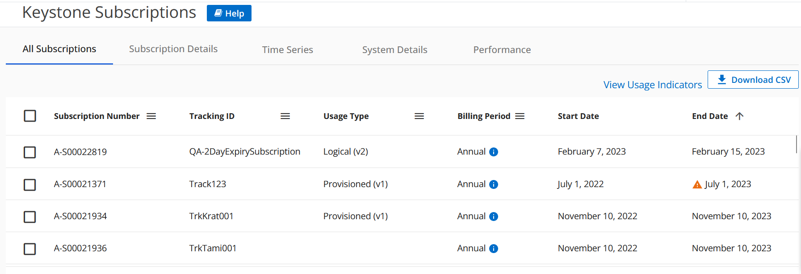
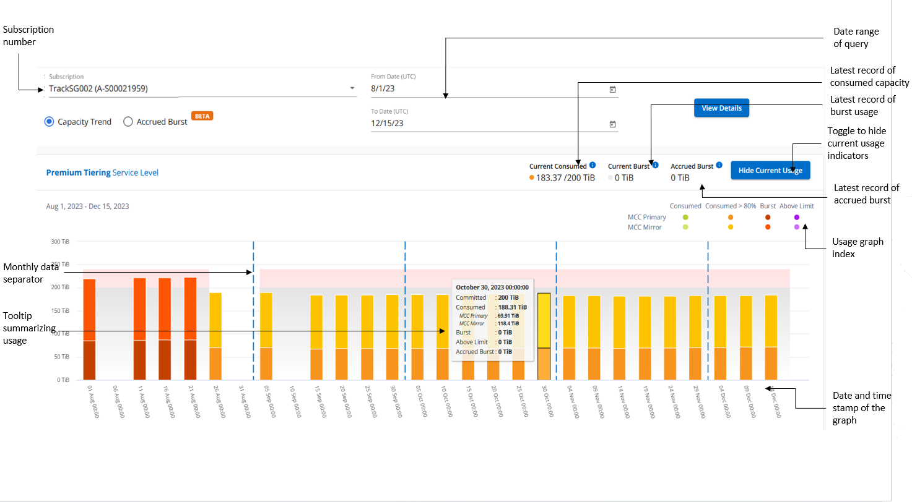
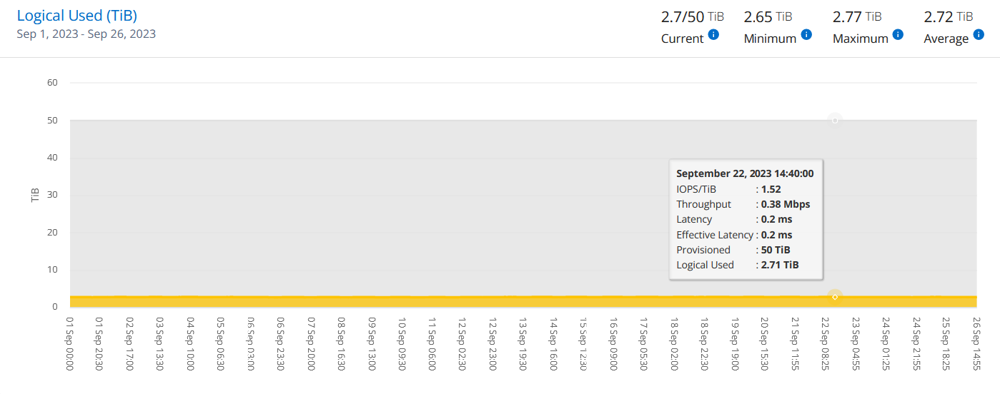

Servicios NetApp Keystone
Servicios NetApp Keystone
Consola del asesor digital y generación de informes para Keystone
 Sugerir cambios
Sugerir cambios
El panel de asesor digital (asesor digital) de Active IQ le proporciona la capacidad de supervisar el uso correspondiente a sus suscripciones a NetApp Keystone y de generar informes. Al suscribirse a los servicios de Keystone, puede ver los detalles de su suscripción y uso en el widget Suscripciones de Keystone del panel de control de Digital Advisor.

|
La información disponible aquí es aplicable tanto a ONTAP como a StorageGRID. Se han señalado excepciones en las secciones correspondientes. |
Para obtener información sobre el widget Keystone Digital Advisor, consulte "Vea el uso de la capacidad con la suscripción a NetApp Keystone".
Para ver la suscripción a Keystone y los detalles de uso, realice los siguientes pasos:
-
Inicie sesión en Digital Advisor. Puedes ver el widget Suscripciones de Keystone, que resume el uso de la capacidad con respecto a los servicios de Keystone adquiridos.
-
En el widget Suscripciones Keystone, haz clic en Ver más detalles para ver los detalles de uso y las alertas de tus volúmenes en la página Suscripciones Keystone. Como alternativa, desde el panel de navegación izquierdo, vaya a GENERAL > Suscripciones de Keystone.
Los detalles de las suscripciones, los gráficos de uso de cada nivel de servicio y los detalles de volumen se muestran en las distintas pestañas de la pantalla Suscripciones de Keystone.
|
|
El consumo de capacidad en las suscripciones de Keystone se muestra en TIBs en las consolas e informes, y se redondea a dos posiciones decimales. Si el uso es inferior a 0.01 TIB, el valor se muestra como 0 o. No Usage. Los datos de estas pantallas se muestran en la hora UTC (zona horaria del servidor). Al introducir una fecha para la consulta, se considera automáticamente que está en la hora UTC.
|
Para obtener más información sobre las métricas de uso, consulte "Definiciones y métricas de nivel de servicio". Para obtener información sobre las distintas capacidades que se utilizan en Keystone, consulte "Definiciones de la capacidad del servicio de Keystone".
Suscripciones
Puedes ver una lista de tus suscripciones en la pestaña Suscripciones.

Puede ver la siguiente información. Para determinados campos y columnas, puede ver información o iconos de advertencia y sugerencias de herramientas que le proporcionan información adicional sobre los datos.
-
* Número de suscripción*: El número de suscripción de la suscripción de Keystone que asigna NetApp.
-
ID de seguimiento: El ID de seguimiento asignado en el momento de la activación de la suscripción. Se trata de un ID exclusivo para cada suscripción y sitio, que se utiliza para realizar el seguimiento de la suscripción.

Si su suscripción tiene un nivel de servicio de protección de datos o un plan de tarifas asignado, una información sobre herramientas le ayudará a identificar el ID de seguimiento de la suscripción de partner en una configuración de MetroCluster. Para saber cómo ver el consumo detallado de suscripciones de partners en una configuración de MetroCluster, consulte "Gráficos de referencia para la protección de datos". -
Tipo de uso: Es posible que te hayas suscrito a varias suscripciones de Keystone (versión 1) o Keystone STaaS (versión 2). Las reglas del plan de tarifas para los niveles de servicio pueden variar para los dos tipos de suscripción. Al observar el valor de esta columna, sabe si el tipo de uso se factura según el uso aprovisionado o lógico de cualquiera de ellos
v1o.v2. Para obtener más información sobre STaaS de Keystone, consulte "Documentación de STaaS de Keystone". -
Período de facturación: El período de facturación de la suscripción, como mensual, trimestral o anual.
-
Fecha de inicio: La fecha de inicio de la suscripción.
-
Fecha de finalización: Fecha de finalización de la suscripción. Si tiene una suscripción facturable mensual que se renueva automáticamente cada mes, verá
Month-on-monthen lugar de la fecha de finalización. En función de esta fecha, es posible que vea mensajes de información de las suscripciones que están a punto de caducar o que tienen políticas de renovación automática asociadas. -
Estado del uso: Indica la cantidad de la suscripción que se ha utilizado o que se ha utilizado en exceso. Puede ordenar la lista por esta columna si desea ver los registros de consumo más altos.
-
 : Al hacer clic en este icono para una suscripción, se abre la pestaña Uso actual con detalles adicionales de esa suscripción.
: Al hacer clic en este icono para una suscripción, se abre la pestaña Uso actual con detalles adicionales de esa suscripción. -
 : Al hacer clic en este icono, se abre la pestaña Tendencia de capacidad, donde puede ver los datos de uso históricos de cada nivel de servicio incluido en esta suscripción.
: Al hacer clic en este icono, se abre la pestaña Tendencia de capacidad, donde puede ver los datos de uso históricos de cada nivel de servicio incluido en esta suscripción.
Puede consultar los siguientes indicadores de uso para comprobar el estado de uso de cada suscripción:

 : No se ha registrado ningún uso de la capacidad con respecto a la capacidad comprometida del nivel de servicio
: No se ha registrado ningún uso de la capacidad con respecto a la capacidad comprometida del nivel de servicio
 : El consumo es normal, dentro del 80% de la capacidad comprometida
: El consumo es normal, dentro del 80% de la capacidad comprometida
 : Consumo máximo, es decir, el uso está a punto de alcanzar el 100% o más de la capacidad comprometida. La columna consumido muestra este indicador para cualquier consumo superior al 80% de la capacidad comprometida
: Consumo máximo, es decir, el uso está a punto de alcanzar el 100% o más de la capacidad comprometida. La columna consumido muestra este indicador para cualquier consumo superior al 80% de la capacidad comprometida
 : El consumo está dentro del límite de ráfaga. El consumo en ráfaga es el consumo que supera el 100% de capacidad comprometida de un nivel de servicio, y se encuentra dentro del límite de uso acordado en ráfaga, como el 120%
: El consumo está dentro del límite de ráfaga. El consumo en ráfaga es el consumo que supera el 100% de capacidad comprometida de un nivel de servicio, y se encuentra dentro del límite de uso acordado en ráfaga, como el 120%
 : Indica un consumo superior al límite de ráfaga estipulado
: Indica un consumo superior al límite de ráfaga estipulado
Uso actual
Para conocer los detalles de sus suscripciones, haga clic en la pestaña Uso actual y seleccione el número de suscripción requerido.

En TIB, se muestran detalles, como el nombre del nivel de servicio, el compromiso, el consumo, las capacidades disponibles y el uso de ráfaga actual y acumulado.
|
|
La |
Para obtener más información sobre sus servicios de almacenamiento de Keystone y los niveles de servicio relevantes, consulte "Niveles de servicio".
Tendencia de capacidad
La pestaña Tendencia de capacidad muestra los datos históricos de tus suscripciones de Keystone durante un período específico. Los gráficos verticales muestran los detalles de uso del intervalo de tiempo seleccionado con los indicadores adecuados para que pueda comparar y generar informes.
-
Haga clic en la pestaña Tendencia de capacidad.
-
Seleccione la suscripción necesaria para la que desea ver los detalles. La primera suscripción en el nombre de su cuenta se selecciona de forma predeterminada.
-
Seleccione Tendencia de capacidad si desea ver los datos históricos y analizar la tendencia de uso de capacidad. Selecciona Explosión acumulada facturada si deseas ver los datos de uso de ráfaga históricos, para los que se han generado facturas. Puede utilizar estos datos para analizar el uso facturado según la factura.
Ver la tendencia de capacidad
Leer más
Si ha seleccionado la opción Tendencia de capacidad, siga estos pasos:
-
Seleccione el intervalo de tiempo de los iconos del calendario en los campos desde fecha y hasta fecha. Seleccione el rango de fechas de la consulta. El rango de fechas puede ser el comienzo del mes o la fecha de inicio de la suscripción hasta la fecha actual o la fecha de finalización de la suscripción. No puede seleccionar una fecha futura.
Para obtener un rendimiento óptimo y una experiencia de usuario, limite el rango de fechas de la consulta a tres meses. -
Haga clic en Ver detalles. Los datos de consumo históricos de la suscripción para cada nivel de servicio se muestran en función del intervalo de tiempo seleccionado.
Los gráficos de barras muestran el nombre del nivel de servicio y la capacidad consumida respecto a ese nivel de servicio para el rango de fechas. La fecha y la hora de la colección se muestran en la parte inferior del gráfico. Según el rango de fechas de la consulta, los gráficos de uso se muestran en un rango de 30 puntos de recopilación de datos. Puede pasar el cursor del ratón sobre los gráficos para ver el desglose del uso en términos de datos comprometidos, consumidos, ráfagas y por encima de los datos del límite de ráfaga en ese punto de recopilación de datos.

Los siguientes colores en los gráficos de barras indican la capacidad consumida tal y como se define en el nivel de servicio. Los datos mensuales a través de los gráficos están separados por una línea vertical.
-
Verde: Dentro del 80%.
-
Ámbar: 80% - 100%.
-
Rojo: Uso de ráfagas (100% de la capacidad comprometida con el límite de ráfaga acordado)
-
Morado: Por encima del límite de ráfaga o.
Above Limit.
|
|
Un gráfico en blanco indica que no hay datos disponibles en el entorno en ese punto de recopilación de datos. |
Puede hacer clic en el botón de alternar Mostrar uso actual para ver los datos de consumo, uso de ráfaga y ráfaga de acumulación para el período de facturación actual. Estos detalles no se basan en el rango de fechas de la consulta.
-
Corriente consumida: Indicador de la capacidad consumida (en TIB) definido para el nivel de servicio. Este campo utiliza colores específicos:
-
Ningún color: Ráfaga o por encima del uso de ráfaga.
-
Gris: Sin uso.
-
Verde: Dentro del 80% de la capacidad comprometida.
-
Ámbar: El 80 % de la capacidad comprometida con la ráfaga.
-
-
Ráfaga actual: Indicador de la capacidad consumida dentro o por encima del límite de ráfaga definido. Cualquier uso dentro del límite de ráfaga acordado, por ejemplo, un 20 % por encima de la capacidad comprometida se encuentra dentro del límite de ráfaga. Se considera un uso adicional por encima del límite de ráfaga. Este campo muestra colores específicos:
-
Sin color: Sin uso de ráfaga.
-
Rojo: Uso en ráfaga.
-
Morado: Por encima del límite de ráfaga.
-
-
* Explosión devengada*: Indicador del uso de ráfaga devengado o la capacidad consumida calculada por mes para el período de facturación actual. El uso de ráfaga acumulado se calcula en función de la capacidad comprometida y consumida para un nivel de servicio:
(consumed - committed)/365.25/12.
Consulta de repartición devengada facturada
Leer más
Si ha seleccionado la opción Ráfaga devengada facturada, de forma predeterminada, puede ver los datos de uso de ráfaga acumulados mensualmente durante los últimos 12 meses que se han facturado. Puede realizar una consulta por el rango de fechas de hasta los últimos 30 meses. Los gráficos de barras se muestran para los datos facturados, y si el uso aún no se ha facturado, verá Pending para ese mes.
|
|
El uso de bursting acumulado facturado se calcula por período de facturación, en función de la capacidad comprometida y consumida para un nivel de servicio. |

Esta función está disponible en modo de sólo vista previa. Póngase en contacto con su KSM para obtener más información sobre esta función.
Gráficos de referencia para la protección de datos
Leer más
Si se ha suscrito al servicio de protección de datos, puede ver el desglose de los datos de consumo de los sitios asociados de MetroCluster en la pestaña Tendencia de capacidad.
Para obtener más información sobre protección de datos, consulte "Protección de datos".
Si los clústeres de su entorno de almacenamiento de ONTAP se configuran en una configuración de MetroCluster, los datos de consumo de su suscripción de Keystone se dividen en el mismo gráfico de datos históricos para mostrar el consumo en los sitios principales y de mirroring para los niveles de servicio básicos.
|
|
Los gráficos de barras de consumo se dividen sólo para los niveles de servicio básicos. Para los niveles de servicio de protección de datos, esta demarcación no aparece. |
Para los niveles de servicio de protección de datos, el consumo total se divide entre los sitios de partner y el uso en cada sitio de partner se refleja y se factura en una suscripción aparte, es decir, una suscripción para el sitio principal y otra para el sitio de mirroring. Por eso, cuando selecciona el número de suscripción para el sitio principal en la pestaña Tendencia de capacidad, los gráficos de consumo para los niveles de servicio DP muestran los detalles de consumo discretos solo para el sitio principal. Dado que cada sitio asociado de una configuración MetroCluster actúa como origen y mirroring, el consumo total de cada sitio incluye los volúmenes de origen y de reflejo creados en dicho sitio.
|
|
La información sobre herramientas junto al ID de tacking de tu suscripción en la pestaña Uso actual te ayuda a identificar la suscripción asociada en la configuración de MetroCluster. |
Para los niveles de servicio básicos, cada volumen se carga según se aprovisiona en los sitios primario y de mirroring, y, por lo tanto, se divide el mismo gráfico de barras según el consumo en los sitios primario y de mirroring.
La siguiente imagen muestra los gráficos para el nivel de servicio Extreme (nivel de servicio base) y un número de suscripción principal. El mismo gráfico de datos históricos marca el consumo del sitio duplicado en un tono más claro del código de color utilizado para el sitio primario. La información de herramienta al pasar el ratón muestra el desglose de consumo (en TiB) para los sitios principales y de mirroring, 1,02 TiB y 1,05 TiB, respectivamente.

Para el nivel de servicio Data-Protect Extreme (nivel de servicio de protección de datos), los gráficos aparecen de la siguiente manera:

Al comprobar la suscripción secundaria, puede ver que el gráfico de barras del nivel de servicio Extreme (nivel de servicio básico) en el mismo punto de recopilación de datos que el sitio del partner se invierte, y la división de consumo en los sitios primario y de reflejo es de 1,05 TiB y 1,02 TiB respectivamente.

Para el nivel de servicio Data-Protect Extreme (nivel de servicio de protección de datos), el gráfico aparece así en el mismo punto de recogida que el sitio del partner:

Para obtener más información sobre cómo MetroCluster protege sus datos, consulte "Comprender la protección de datos y la recuperación ante desastres de MetroCluster".
Volúmenes y objetos
En la pestaña Volúmenes y objetos, puede ver el consumo y otros detalles de sus volúmenes en ONTAP. Para StorageGRID, esta pestaña muestra los nodos y su uso individual en su entorno de almacenamiento de objetos.
|
|
El nombre de esta pestaña varía según la naturaleza de la implementación en el sitio. Si tiene tanto volúmenes como almacenamiento de objetos, puede ver la pestaña Volúmenes y objetos. Si solo tiene volúmenes en su entorno de almacenamiento, el nombre cambia a volúmenes. Solo para el almacenamiento de objetos, puede ver la pestaña Objects. |
Ver los detalles del volumen de ONTAP
Leer más
Para ONTAP, la pestaña Volúmenes muestra información, como el uso de la capacidad, el tipo de volumen, el clúster, el agregado y el nivel de servicio de los volúmenes en su entorno de almacenamiento gestionado por su suscripción a Keystone.
-
Haga clic en la ficha Volumes.
-
Seleccione el número de suscripción. De forma predeterminada, se selecciona el primer número de suscripción disponible.
Se muestran los detalles del volumen. Puede desplazarse por las columnas y obtener más información al pasar el ratón por los iconos de información situados junto a los encabezados de las columnas. Puede ordenar por las columnas y filtrar las listas para ver información específica.
Para los servicios de protección de datos, se muestra una columna adicional para indicar si el volumen es un volumen primario o reflejo en la configuración de MetroCluster. Puede copiar números de serie de nodos individuales haciendo clic en el botón Copiar series de nodos.

Vea los nodos y el consumo de StorageGRID
Leer más
Para StorageGRID, esta pestaña muestra el uso lógico de los nodos para el almacenamiento de objetos.
-
Haga clic en la pestaña Objects.
-
Seleccione el número de suscripción. De forma predeterminada, se selecciona el primer número de suscripción disponible. Al seleccionar el número de suscripción, se habilita el enlace de detalles del almacenamiento de objetos.

-
Haga clic en el enlace para ver los nombres de los nodos y los detalles de uso lógico de cada nodo.

Rendimiento
La pestaña Rendimiento te permite ver las métricas de rendimiento de los volúmenes de ONTAP gestionados por tus suscripciones de Keystone.
|
|
Esta pestaña está disponible de forma opcional. Póngase en contacto con el soporte técnico para ver esta pestaña. |
-
Haga clic en la pestaña Rendimiento.
-
Seleccione el número de suscripción. De forma predeterminada, se selecciona el primer número de suscripción.
-
Seleccione el nombre del volumen requerido de la lista.
Como alternativa, puede hacer clic en el
Icono contra un volumen de ONTAP en la pestaña Volúmenes para navegar a esta pestaña. -
Seleccione el rango de fechas de la consulta. El rango de fechas puede ser el comienzo del mes o la fecha de inicio de la suscripción hasta la fecha actual o la fecha de finalización de la suscripción. No puede seleccionar una fecha futura.
Los detalles recuperados se basan en el objetivo de nivel de servicio para cada nivel de servicio. Por ejemplo, el valor máximo de IOPS, el rendimiento máximo, la latencia objetivo y otras métricas vienen determinadas por la configuración individual del nivel de servicio. Para obtener más información sobre la configuración, consulte "Niveles de servicio".
|
|
Si selecciona la casilla de verificación SLO Reference Line, los gráficos de IOPS, rendimiento y latencia se representan en función del objetivo de nivel de servicio para el nivel de servicio. De lo contrario, se muestran en números reales. |
Los datos de rendimiento que se muestran en el gráfico horizontal son el promedio de cada intervalo de cinco minutos, y se organizan según el intervalo de fechas de la consulta. Puede desplazarse por los gráficos y pasar el ratón por los puntos de datos específicos para explorar en profundidad los datos recopilados.
Puede ver y comparar las métricas de rendimiento en las siguientes secciones en función de la combinación del número de suscripción, el nombre del volumen y el rango de fechas seleccionado. Los detalles se muestran por nivel de servicio asignado al volumen. Es posible ver el nombre del clúster y el tipo de volumen, es decir, los permisos de lectura y escritura asignados al volumen. También se muestra cualquier mensaje de advertencia asociado con el volumen.
IOPS/TiB
En esta sección, se muestran los gráficos de entrada y salida para las cargas de trabajo del volumen según el rango de fechas de la consulta. Se muestran los picos de IOPS correspondientes al nivel de servicio y el IOPS actual (en los últimos cinco minutos, no basándose en el rango de fechas de la consulta), junto con el valor de IOPS mínimo, máximo y medio para el intervalo de tiempo, en IOPS/TiB.

Rendimiento (MBps/TiB)
En esta sección, se muestran los gráficos de rendimiento de las cargas de trabajo del volumen según el intervalo de fechas de la consulta. Se muestra el rendimiento máximo del nivel de servicio (SLO Max) y el rendimiento actual (en los últimos cinco minutos, no basado en el rango de fechas de la consulta), junto con el rendimiento mínimo, máximo y promedio del intervalo de tiempo, en MBps/TiB.

Latencia (ms)
Esta sección muestra los gráficos de latencia de las cargas de trabajo del volumen según el rango de fechas de la consulta. Se muestran la latencia máxima para el nivel de servicio (SLO Target) y la latencia actual (en los últimos cinco minutos, no basada en el rango de fechas de la consulta), junto con la latencia mínima, máxima y media del intervalo de tiempo, en milisegundos.
Este gráfico tiene los siguientes colores:
-
Azul claro: Latencia. Esta es la latencia real que incluye cualquier otra latencia que no sea la del servicio de Keystone. Esto puede incluir latencia adicional, como la latencia que se produce entre la red y el cliente.
-
Azul oscuro: Latencia efectiva. La latencia efectiva es la latencia solo aplicable a su servicio de Keystone respecto al acuerdo de nivel de servicio.

Lógico usado (TiB)
Esta sección muestra las capacidades aprovisionadas y lógicas utilizadas del volumen. La capacidad utilizada lógica actual (en los últimos cinco minutos, no basada en el rango de fechas de la consulta), junto con el uso mínimo, máximo y promedio para el rango de tiempo se muestran en los TIBs. En este gráfico, el área gris representa la capacidad comprometida y el gráfico amarillo indica el uso lógico.

Generar informes
Puede generar y ver informes de los detalles de su suscripción, datos históricos de uso de un intervalo de tiempo y detalles de volúmenes de cada una de las pestañas haciendo clic en el botón Descargar CSV: 
Los detalles se generan en formato CSV que se puede guardar para usarlo más adelante.
En la pestaña Capacity Trend, tienes la opción de descargar el informe para los 30 puntos de recopilación de datos predeterminados del rango de fechas de tu consulta, o informes diarios.

Un informe de muestra para la pestaña Capacity Trend, donde se convierten los datos gráficos:

Ver las alertas
Las alertas de la consola envían mensajes de precaución que le permiten comprender los problemas que se producen en el entorno de almacenamiento.
Las alertas pueden ser de dos tipos:
-
Información: Para problemas, como sus suscripciones que están a punto de finalizar, puede ver alertas de información. Pase el cursor sobre el icono de información para obtener más información sobre el problema.
-
Advertencia: Los problemas, como el incumplimiento, se muestran como advertencias. Por ejemplo, si hay volúmenes en los clústeres gestionados que no tienen asociadas políticas de QoS (AQoS) adaptativa, puede ver un mensaje de advertencia. Puede hacer clic en el enlace del mensaje de advertencia para ver la lista de los volúmenes no compatibles en la pestaña Volúmenes.
Si se ha suscrito a un único nivel de servicio o plan de tarifas, no podrá ver la alerta de los volúmenes que no cumplen las normativas. Para obtener información acerca de las políticas AQoS, consulte "Facturación y políticas de calidad de servicio adaptativas".

Póngase en contacto con el soporte de NetApp si desea obtener más información sobre estos mensajes de precaución y advertencia.